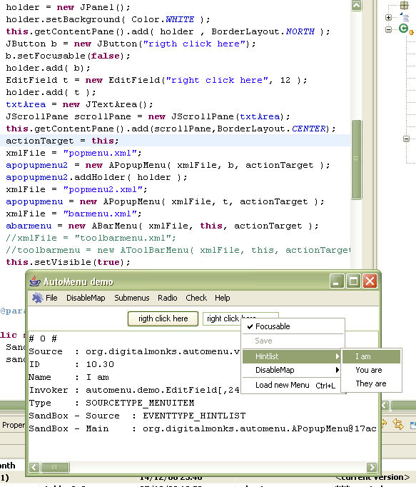

AutoMenu is an automatic menu generator that makes it easy to create JBarMenus and PopupMenus from XML definitions when building GUIs in Swing.
Donate
If you think this software is usefull think about donate! This piece of software was made available for free and it toke a lot of development time to be done.
AutoMenu 2.2
New 2.2 version (December 6, 2008)
Added support I18N and Unique IDs on menuitems (thanks Pieter Voet)

Creating bar/popup menus was never so easy and elegant. From a simple XML file with bar/popup menu definitions and a line off code it's possible to build full menus with all functionality these components ever need to have.
Download jar file
last release: 2008 dec 19
Download JXPath jar file (optional)
Demo source
EditField source
BarMenu XML file sample
PopMenu XML file sample
Easy!
Never more write coupled code for menus.
Java Web Start demo (JRE 1.4+)

How it works
Bar/Popup menus are build directly from XML file, without need to hardcode menu functionalities to your code.
AutoMenu enabled projects
Let me add your project to the list.
Features
Ask for new features.
Bar/Popup menu
- menu item
- checkbox item
- radio button item/group
- separator
- submenus
- support icons
- named disable map
- event dispatcher
- I18N support from propety files inside app jar or in filesystem
- ID tag attribute to differentiate menu itens
- change item state,raise action, set item/submenu invisible through xpath (if commons-jxpath-1.3.jar is present)
Popup menu
- invoker state item - a special item that can be enable/disable according the state returned by a named function from invoker
- invoker state check - a special item used to change some named invoker state
- hintlist - a special item that can dinamicaly build a submenu with given list itens from invoker
Comments
What people think about AutoMenu. Send your comment to rubentrancoso at gmail dot com.
TODO
- Start menu (like WinXP)
- AutoToolbar
- changeable icons for submenu state
- document project
- open popup according named menu given to invoker
- enable popup over barmenu itens
- drag-and-drop operations over barmenu
- popup support for dinamic item insertion